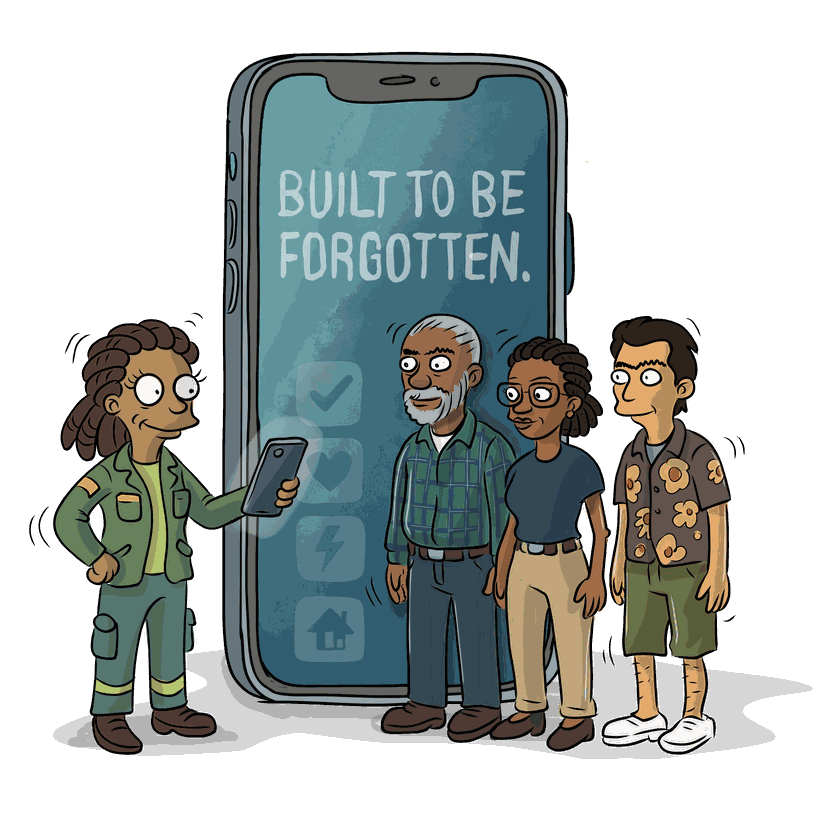

The best tool for a community is one you barely notice. It works in the background. Your neighbours do the rest.
A mutual-aid app for a neighbourhood. Your community gets a Node, anchored to the Resident Association or CPF you already trust. Inside it, small Cells of neighbours, each with a Cell Steward who knows who's who.
Everyone fills in a Gifts Profile: what they can offer, not just what they need. The Trade Exchange is where offers and needs meet. When a community needs something it can't supply itself, the Marketplace connects it to a verified Grounder.
Nothing here is built to keep you scrolling. No algorithm decides what you see. No streaks to protect.
The system can spot who's isolated, or who's carrying too much. It tells a Cell Steward, and the Steward makes the introduction. Neighbours helping neighbours.
Alerts are rare and honest. Urgent means urgent. The rest of the time it stays out of your way.
That's the design goal. Today the intelligence behind it is a nightly view for stewards. Introductions and notifications aren't built yet.
When something breaks, it's usually one of these. The whole platform is organised around them.
The platform isn't open to communities yet. If you're a Resident Association, a CPF or a CBO and you want to help shape it, tell us.